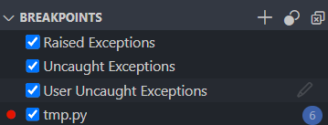

Validation is the process of ensuring that data is correct and useful.
Exception handling is the process of responding to errors that occur during program execution.
These often go hand-in-hand.
Exceptions are a concept in many programming languages.
When a runtime error occurs, an exception is thrown.
The exception is either caught by an exception handler or the program crashes.

Also called a try / catch block in some
languages.
try block to contain code that might cause an
exception
except block to handle the exceptionWe might use and except block to:
x = 1
y = 0
try:
# Code that might cause an exception
print(x / y)
except:
# What to do if an exception occurs
print("This is a description of the error...")When an exception occurs, an exception object is created.
This object contains information about the exception.
try:
print(1 / 0)
except Exception as e:
print(e)We can choose to handle specific types of exceptions. Useful when:
try:
## Will throw a ZeroDivisionError
print(1 / 0)
## Will throw a ValueError
print(int("abc"))
## Will throw a FileNotFoundError
file = open("does_not_exist.txt")
## Will throw a NameError - no handler so program will crash
print(variable_does_not_exist)
except ZeroDivisionError:
print("Cannot divide by zero.")
except ValueError:
print("Invalid value.")
except FileNotFoundError:
print("File not found.")Validation is the process of ensuring that the data that was entered is correct.
int(), float(), str(),
bool(), etc.
try:
number = int(input("Enter a number: "))
except ValueError:
## Handle invalid input
print("Invalid number.")
Most of the time we want to continue to prompt the user for input until
they provide valid input. We can do that with a while loop.
## Get a number from a user - don't let them
## pass until they did:
number = 0
## We will loop indefinitely until we explicitly quit
## the loop with "break"
while True:
try:
## This will go to the except block if the input
## is not a number.
number = float(input('Enter an int: '))
## If we made it here then we know the number is valid,
## so break out of the loop.
break
except ValueError:
## Let the user know they messed up, then go back to
## the top of the loop
print('Must enter an integer.')
## We have a valid number, and can now continue the program
print(number)number = int(input("Enter a number between 1 and 10: "))
while number < 1 or number > 10:
## Handle invalid input
print("Invalid number.")
number = int(input("Enter a number between 1 and 10: "))pet_type = input("Enter a pet type for sitting service (dog, cat): ")
while pet_type != "dog" and pet_type != "cat":
## Handle invalid input
print("Invalid pet type.")
pet_type = input("Enter a pet type for sitting service (dog, cat): ")